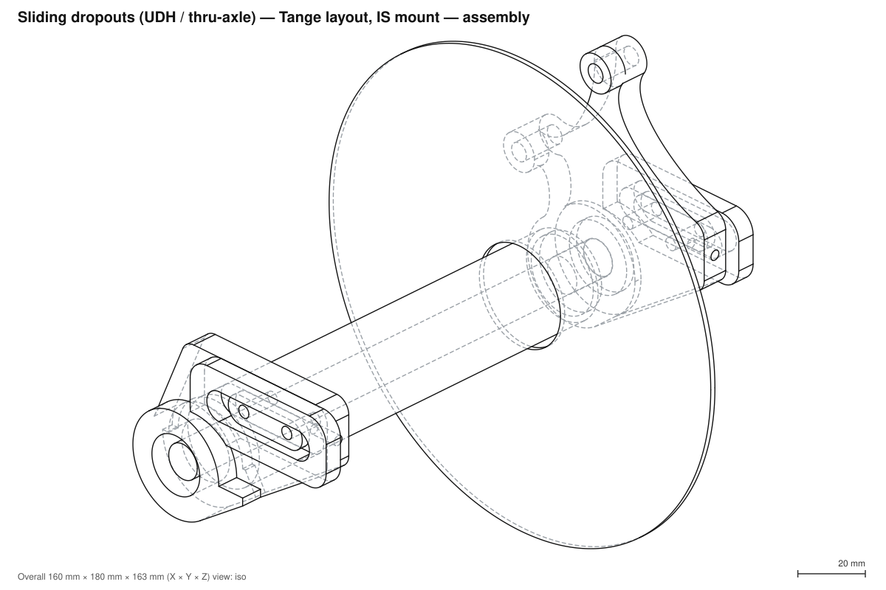
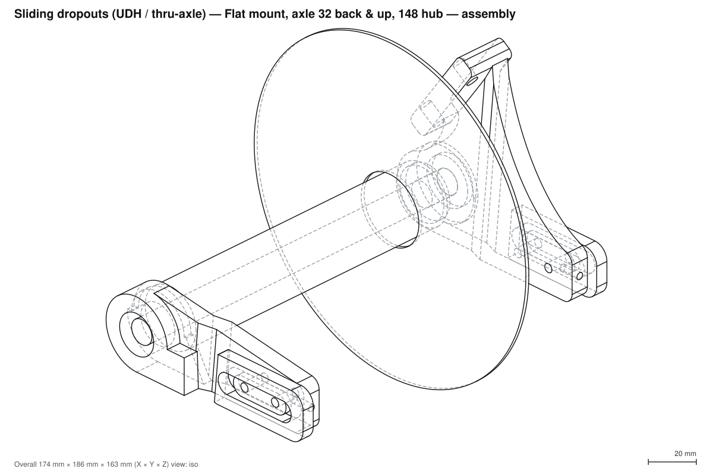
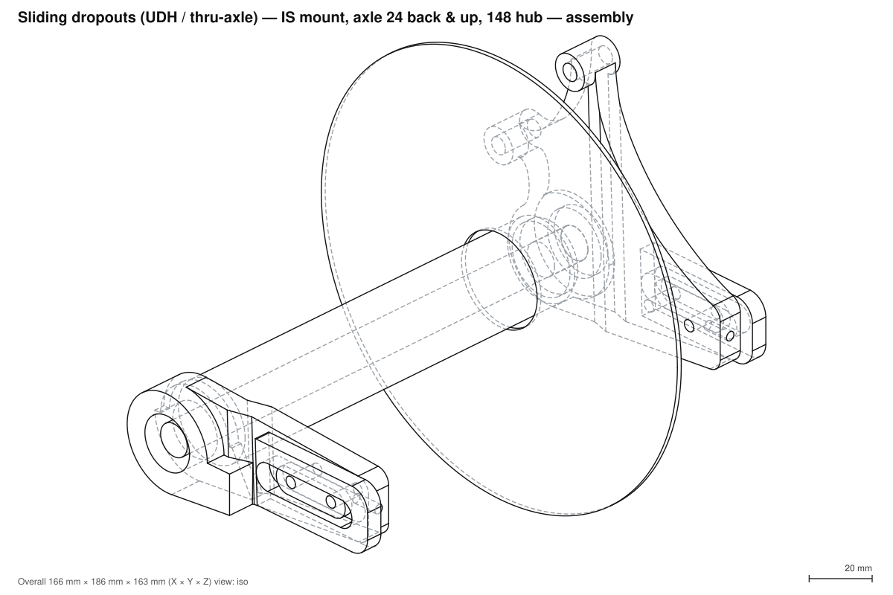

Sliding dropouts (UDH / thru-axle)
Parametric left/right sliding dropout inserts: SRAM UDH + 12 mm thru-axle, flat/post/IS brake mount, axle X/Y and hub-width offsets.
Variants

axle_offset_x = 0.0 · axle_offset_y = 0.0 · brake_mount = is · hub_width_offset = 0.0

axle_offset_x = 32.0 · axle_offset_y = 32.0 · brake_mount = flat · hub_width_offset = 6.0 · hub_offset_mode = bend

axle_offset_x = 24.0 · axle_offset_y = 24.0 · brake_mount = is · hub_width_offset = 6.0 · hub_offset_mode = bend · bend_start = 29.0
About
Sliding dropouts (UDH / thru-axle)
Parametric left and right sliding dropout inserts for a 12 mm thru-axle rear end:
- Right (drive): SRAM UDH hangerless interface (coaxial hanger / Full Mount RD).
- Left (non-drive): thru-axle boss and a choice of rear brake mount: flat (34 mm), post (74 mm), IS2000 (51 mm) or none, positioned for any rotor size.
- Both: axle X/Y offset from the frame's nominal position, and a hub width offset to fit a wider (or narrower) hub than the frame was built for.
Status
draft. Geometry follows the specs in this folder but has not been checked against SRAM's 3D clearance models or a real caliper. Not yet made.
Models
| model | what |
|---|---|
dropout_right |
drive-side insert (UDH) |
dropout_left |
non-drive insert with brake mount |
assembly |
both inserts in their frame socket plates, with thru-axle, hub and rotor (translucent refs) |
Shared parameters are PARAMS in models/_common.py; side-specific ones are RIGHT_PARAMS,
LEFT_PARAMS and FRAME_PLATE there too. dropout_left.py / dropout_right.py merge them into
their own PARAMS, and assembly.py uses all of them, so edit _common.py to change both sides together.
Variants
The site publishes three variants (set in project.toml under [[variants]]), each with its own
page, drawings and downloads:
| variant | brake | axle offset (x / y) | hub |
|---|---|---|---|
tange-is |
IS mount | 0 / 0 (Tange proportions) | 142 (frame 142) |
flat-offset-148 |
flat mount | 32 / 32 (back and up) | 148 (frame 142, hub_width_offset = 6, bent plate) |
is-offset-148 |
IS mount | 24 / 24 (back and up) | 148 (frame 142, hub_width_offset = 6, bent plate, bend_start = 29) |
For is-offset-148, 24 mm is the smallest equal back-and-up offset at which the bent plate clears the
frame plate. With the bend ending 2 mm before the axle boss, the limit is about 23.75 mm; below that,
either the bend doesn't fit or the raised axle region overlaps the frame plate.
cqp build sliding-dropouts builds all three. cqp render sliding-dropouts --variant tange-is previews
one; without --variant the PARAMS defaults below are used.
Construction
Modelled on the Tange sliding inserts in the pictures here (tange-*.jpg/png). The default
proportions are measured off those pictures, scaled from each axle hole: a flat plate running from
the axle boss up and forward to a raised oval key. The key centre is about 33 mm ahead of the
axle and 26 mm above it, and holds two M5 clamp bolts at an 18 mm pitch. Each insert sits on the
inboard face of the frame's socket plate with its key riding in the frame slot (slot_travel
of adjustment). The bolts go through an outer clamp plate and the slot into tapped holes in the
key; an M4 adjuster screw is tapped into the tongue's front end. The frame plate is cut away around
the axle boss over the slide travel, so the boss can be as thick as the interface needs. The
assembly build reports any overlap between each insert and its frame plate.
The key, bolt and tongue defaults reproduce the Tange layout around the axle's nominal position. The axle offsets then move the axle 32 mm back and 32 mm up from there by default, so the plate reaches further back and up to the boss than on the Tange parts. Set both offsets to 0 for the Tange proportions.
Outline. Each plate starts as the convex hull of the axle boss, the tongue corners and the brake bosses: one circle per IS ear, and circles at the rounded corners of each post block and the flat tab. Reliefs then replace straight hull edges with smooth concave curves, as on the Tange parts. The outline follows the first feature's circle a little further round, then a cubic Bézier runs tangent-continuously into the next feature's circle, so there are no corners to fillet.
Each section can be switched on or off: relieve_brake_posts, relieve_brake_axle,
relieve_slider_brake (key region to brake mount) and relieve_axle_slider. The last is off by
default, so no variant relieves between the key and the axle. The relief used on each edge is the
largest (by area removed) that:
- stays within relief_max_depth and relief_max_ratio × the edge length;
- keeps relief_margin clear of the key (including its slide), the adjuster hole, the side of each
brake boss facing the plate, the IS ear rings and the UDH stop face;
- doesn't cut into any other feature.
cqp build prints each relief's depth and edge length.
Hub offset bend. The frame's plate seat is fixed, so a wider hub would otherwise need a thinner
plate. With hub_offset_mode = "bend" the plate keeps its full thickness. The slider region stays
on the frame seat and the axle region steps outboard by hub_width_offset / 2, joined by a sloped
joggle whose bend lines run square to the line from the key to the axle. The bend must fit between
the frame plate and the axle boss. cqp build fails with a message if it doesn't, and the assembly
reports any frame-plate overlap. The slider region then sits hub_width_offset / 2 inboard of
where a native wide-hub frame's inboard face would be, so check cassette and chain clearance on the
drive side.
Coordinates: origin = the frame's nominal axle centre, X forward, Z up, +Y = left. The front view
looks at the drive side; back at the brake side.
Key parameters
| parameter | default | meaning |
|---|---|---|
frame_old |
142 | hub OLD the frame's insert seats were built for |
hub_width_offset |
0 | extra hub OLD (total). e.g. 6 runs a 148 hub in a 142 frame |
hub_offset_mode |
bend | bend: full-thickness plate with a joggle, so the axle region sits hub_width_offset / 2 outboard of the slider region. thin: the whole plate gets thinner instead |
bend_start / bend_length |
30 / 8 | where the bend starts (from the key centre towards the axle) and its sloped length |
relieve_brake_posts / relieve_brake_axle / relieve_slider_brake / relieve_axle_slider |
on / on / on / off | relieve that section of the outline |
relief_max_depth / relief_max_ratio |
12 / 0.35 | deepest a relief may cut in from the hull edge, absolutely and as a fraction of the edge length |
relief_margin / relief_min_chord |
4 / 15 | material kept around the key, adjuster, brake bosses and the UDH stop; shortest edge worth relieving |
brake_edge_radius |
3 | rounds the post-mount and flat-mount boss corners in the side profile |
axle_offset_x |
32 | + moves the axle rearward (longer chainstays), measured from the Tange-proportioned position |
axle_offset_y |
32 | + moves the axle up |
bolt_x / bolt_z / bolt_pitch |
24 / 26 / 18 | first clamp bolt position ahead of / above the nominal axle, and bolt spacing |
key_length / key_width / key_height |
31 / 10 / 3 | raised key that rides in the frame slot (keep key_height below the frame plate thickness) |
tongue_length / tongue_height |
56 / 24 | plate extent ahead of the axle, and height around the key line |
plate_thickness |
9 | insert plate thickness at zero hub offset (min min_plate_thickness = 4) |
brake_mount |
flat | flat, post, is or none |
rotor |
160 | rotor diameter the mount is positioned for |
caliper_mount_angle |
None | rotates the caliper mount about the axle in degrees (0 = mount line along +X, face up). None uses the angle measured off the Tange insert for that mount: flat 55, post 38, IS 51 |
nds_thickness_D |
15 | UDH sheet 3 "D": hub face → axle-head face; sets axle length L1 = D + OLD + 17 |
Interface dimensions used
UDH (drive side), from udh_frame_spec.py / udh-spec.pdf sheets 1–3:
- Frame span (inboard faces) OLD + 7, so each inboard face sits at (OLD + 7)/2.
- Hanger pocket 4 deep from the inboard face (floor = datum B), radius 15.5 (R15 MIN + position tol.).
- 12.5 from datum B to the outboard face, so the boss is 16.5 thick. Ø20.05 bore (20 +0.1/0).
- Forward rotational stop: pocket wall 14.4 from the axle, normal 30° above +X (forward-up). The
build checks its contact area is ≥ 10 mm². The pocket is open behind and below the axle for the
≥ 60° backward rotation.
- Boss outer radius 18 (R14.5–19.0).
Non-drive: Ø26 hub-contact protrusion 3.5 mm proud of the inboard face (sheet 1 "alternative design", Ø25 min), Ø12.2 axle hole, axle-head face at OLD/2 + D.
Brake (from disc_brake_mounts.py): face/bolt ordinates from Verdone's linear model for the
chosen rotor. Lateral position: hub rotor inner face (142: 53.25, 148: 55.25) plus the mount's
screw offset (post 9.55, flat 12.20, IS 15.25). Bosses are kept rotor_clearance (2 mm) outboard of
the rotor. Post: M6 tapped, 13 deep, on the bolt plane. Flat: M5 clearance holes through the tab
with a Ø10 counterbore under it for the bolt heads. IS: Ø6.2 plain holes in separate ears, as on
the Tange IS insert.
Notes and caveats
udh_frame_spec.pylabels the 12.5 mm as "recess floor to inboard face". In Section Z-Z the hanger is on the left (inboard) and the 12.5 runs from datum B to the right-hand face, so it is modelled here as datum B to the outboard face. Check this against the PDF.disc_brake_mounts.pyhasthreaded_in_frame=Truefor flat mount but also says the bolts go in from below the chainstay. The model uses clearance holes; changeflat_hole_diato 4.2 for M5 threads.- The caliper mount angle (
caliper_mount_angle) is free: rotating the caliper about the axle keeps it on the rotor. The defaults copy the Tange inserts, but those were measured off small product pictures; pick an angle that clears your stays and caliper. The web joining the mount to the insert is a plain convex hull in the plate plane. - Rotor lateral data only covers 142 and 148 mm hubs. Other hub widths raise an error unless
brake_mount = "none". - Rotor shift with
hub_width_offset: the brake mount follows the actual hub's rotor position fromdisc_brake_mounts.ROTOR_FACE_FROM_CENTER: 53.25 for 142, 55.25 for 148. So +6 mm of hub width moves the rotor out 2.0 mm, nothub_width_offset / 2= 3.0 mm, even though the hub faces move 3.0 mm. Verdone gives 53.25 in his list and 52.25 in his equation text for 142 (see the note indisc_brake_mounts.py). 52.25 would give exactly 3.0 mm, which matches Boost moving the whole hub 3 mm per side. Confirm which value is right before machining a brake mount. - Verdone's model diverges from Shimano's post-mount numbers at 180/203 mm (see
disc_brake_mounts.compare_post_mount_to_shimano). - UDH use needs a (free) SRAM licence. Verify the right insert against the hangerless clearance model 90-7518-190-070 Rev H before making parts. Dropouts are safety-critical.
Materials
Intended for 7075-T6 or 6061-T6 aluminium, or stainless steel, machined. Contact faces around the axle must be flat and left unpainted.